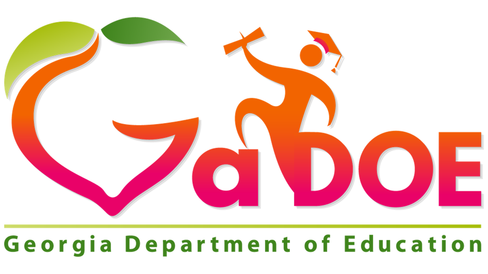

WHAT I TEACH...

How can computing change the world? What is computer science? Engage your creativity. Demonstrate and build your problem-solving ability all while connecting the relevance of computer science to society! Computer Science (CS) Principles is an intellectually rich and engaging course that is focused on building a solid understanding and foundation in computer science. This course emphasizes the content, practices, thinking and skills central to the discipline of computer science. Through both its content and pedagogy, this course aims to appeal to a broad audience. The focus of this course will fall into these computational thinking practices: connecting computing, developing computational artifacts, abstracting, analyzing problems and artifacts, communicating, and collaborating.
Various forms of technologies will be used to expose students to resources and application of computer science. Professional communication skills and practices, problem-solving, ethical and legal issues, and the impact of effective presentation skills are enhanced in this course to prepare students to be college and career ready. Employability skills are integrated into activities, tasks, and projects throughout the course standards to demonstrate the skills required by business and industry. Competencies in the co-curricular student organizations are integral components of both the employability skills standards and content standards for this course.
Courses within this pathway:
- Introduction to Software Technology
- Computer Science Principles
- AP Computer Science Principles OR AP Computer Science A

This course, with Hypertext Markup Language (HTML) and Cascading Style Sheet (CSS) as its foundation, will teach students to develop and design responsive websites through coding, testing, debugging and implementation of web-based services. This course will also allow students to learn about content management systems, client-side languages, server-side languages, and database concepts. The course is designed to give students foundational knowledge of front-end and back-end development to address the presentation and data access layers of website development.
Various forms of technologies will be used to expose students to resources and application of computer science. Professional communication skills and practices, problem-solving, ethical and legal issues, and the impact of effective presentation skills are enhanced in this course to prepare students to be college and career ready. Employability skills are integrated into activities, tasks, and projects throughout the course standards to demonstrate the skills required by business and industry. Competencies in the co-curricular student organizations are integral components of both the employability skills standards and content standards for this course
Courses within this pathway:
- Introduction to Software Technology
- Computer Science Principles
- Web Development

Are you ready to design and develop? The course is designed for high school students to strategize, design, and develop games and mobile and desktop applications that can be produced in the real world. Students will learn about life cycles of project development and use models to develop applications. Attention will be placed on how user interfaces affect the usability and effectiveness of a game or an application. Programming constructs will be employed which will allow students’ applications to interact with “real world,” stimuli. The course exposes students to privacy, legality, and security considerations with regard to the software industry.
Various forms of technologies will be used to expose students to resources, software, and applications of programming. Professional communication skills and practices, problem-solving, ethical and legal issues, and the impact of effective presentation skills are enhanced in this course to prepare students to be college and career ready. Employability skills are integrated into activities, tasks, and projects throughout the course standards to demonstrate the skills required by business and industry. Competencies in the co-curricular student organizations are integral components of both the employability skills standards and content standards for this course.
Courses within this pathway:
- Introduction to Software Technology
- Computer Science Principles
- Web Development
Click the Georgia Department of Education icon below for additional information on the courses listed above and their associated standards.
